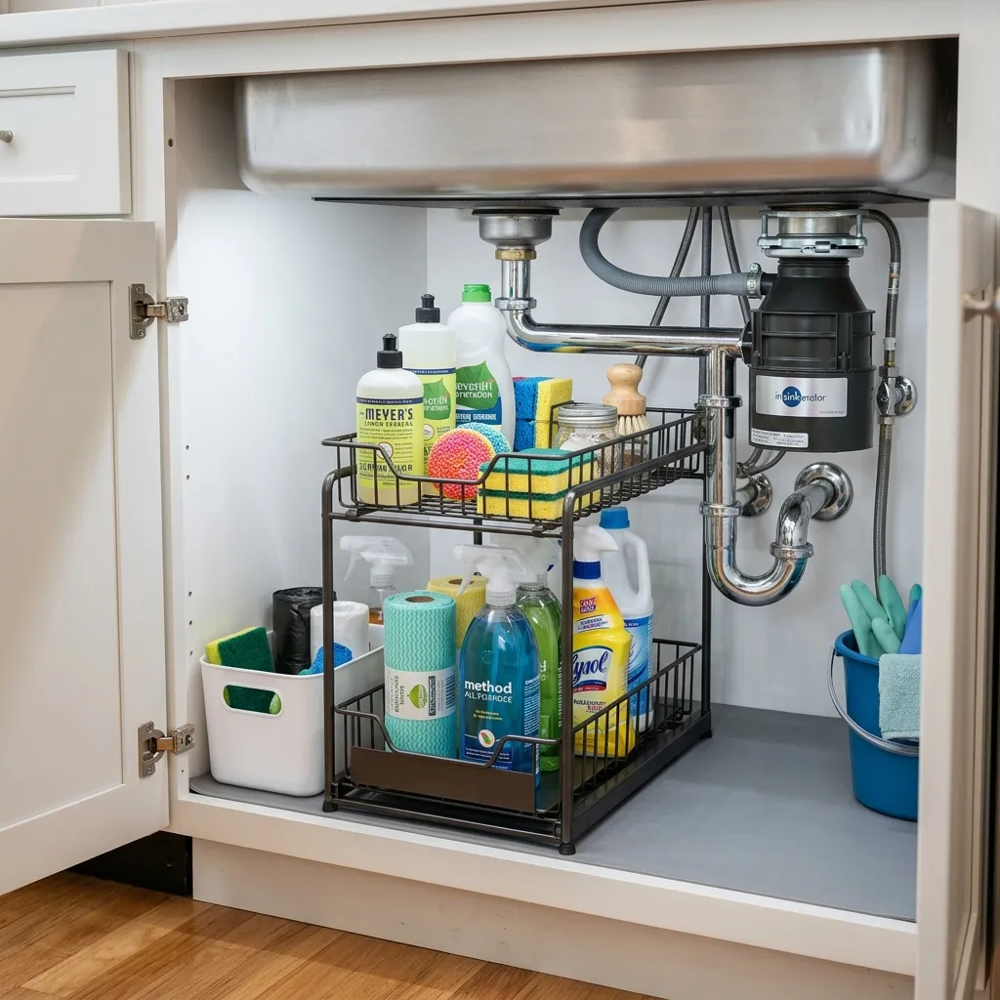
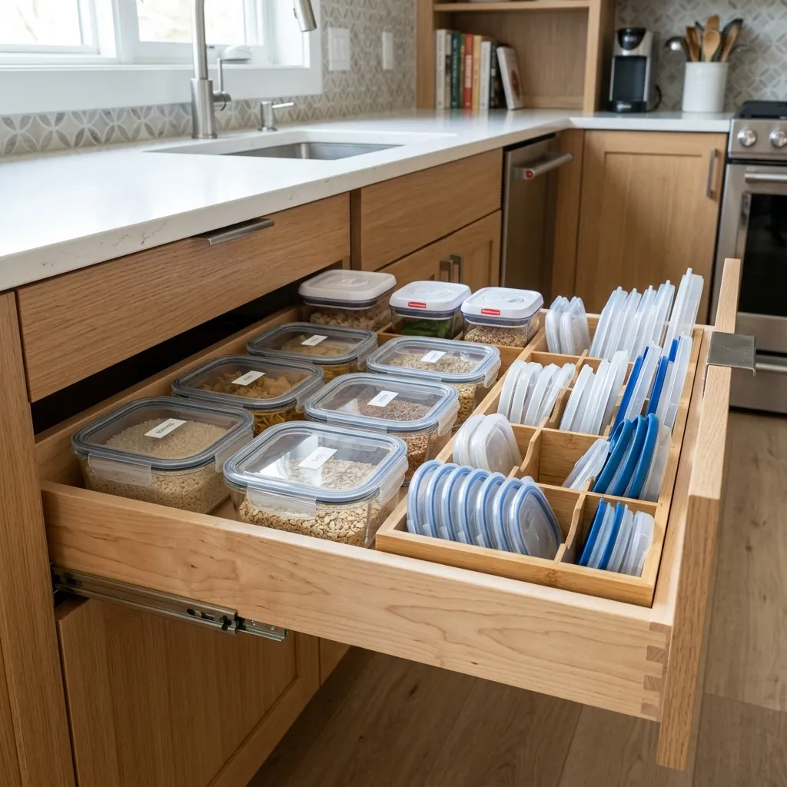
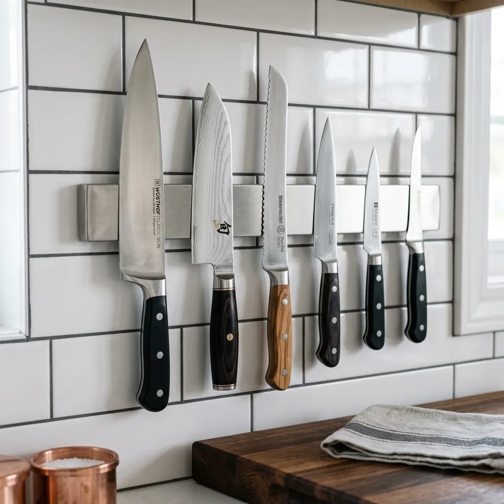
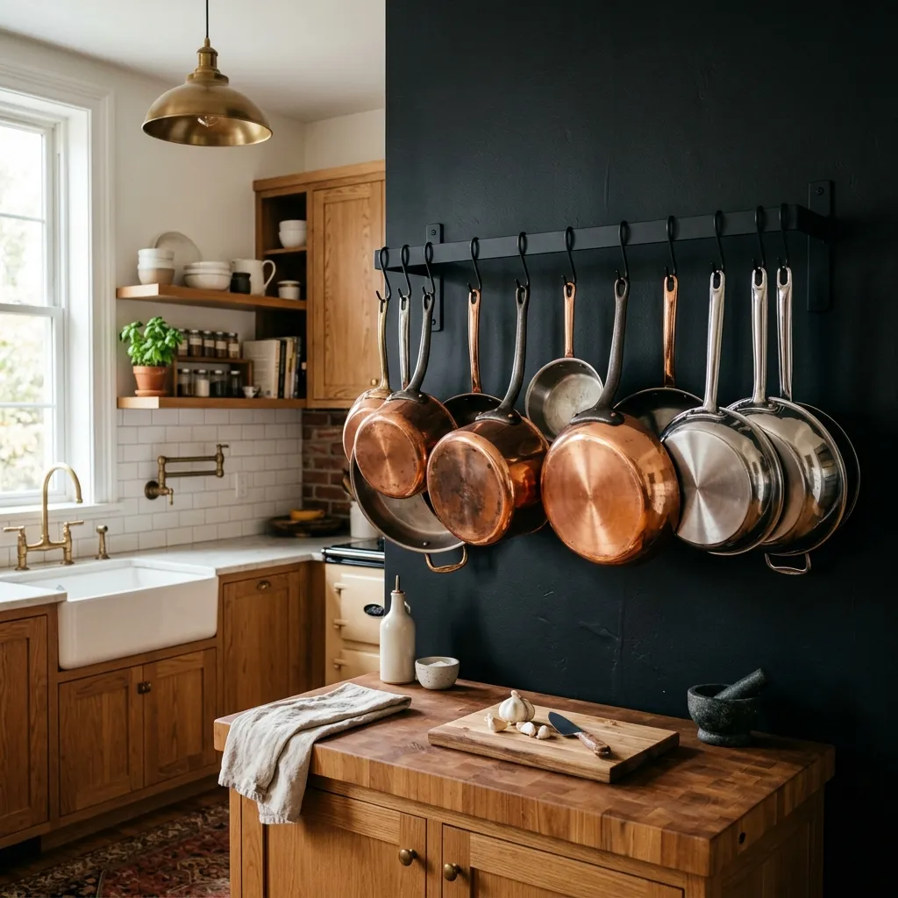
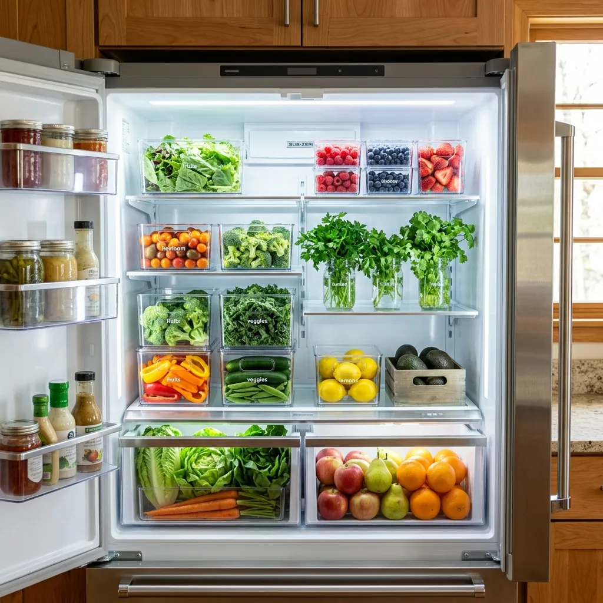

7 Small Kitchen Cabinet Storage Hacks to Double Your Counter Space
If you have ever felt defeated while trying to chop vegetables on a tiny 12-inch strip of countertop between the air fryer and the knife block, you are definitely not alone. In small kitchens, counter space is the single most precious commodity—and when it gets taken over by clutter, cooking feels like a stressful chore rather than a calming ritual.
Most homeowners assume that the only way to solve a cramped kitchen is a full home renovation or moving to a bigger house. But here is the truth: the real secret to sprawling, empty kitchen counters isn't more square footage—it is maximizing the unused vertical space inside your existing cabinets.
Standard kitchen cabinets are notoriously inefficient. They are built as deep, empty wooden boxes, leaving vast amounts of wasted air space above your plates and behind your spice jars. When your cabinets are unorganized, items naturally spill out onto your countertops, turning your beautiful kitchen into an everyday storage unit.
In this in-depth guide, we are sharing 7 smart, budget-friendly small kitchen cabinet storage hacks that will help you unlock hidden storage space inside your cupboards, streamline your meal prep, and literally double your usable counter space!

1. Install Under-Sink Tiered Sliding Organizers
The cabinet under the kitchen sink is undeniably the most wasted, chaotic area in almost every home. Because of the awkward plumbing pipes, garbage disposal unit, and drain lines, most people simply toss trash bags, dishwashing pods, extra sponges, and harsh cleaning sprays into one giant, dark heap under the sink.
When under-sink storage is a mess, everyday cleaning items (like dish soap, hand sanitizer, and sponges) inevitably end up cluttering the edges of your sink basin and surrounding countertop.

THE GAME CHANGER: TWO-TIERED SLIDING BASKETS
Installing an L-shaped or two-tier sliding steel organizer fits right around your sink pipes. The sliding pull-out mechanism brings items from the dark back of the cabinet directly to your fingertips, while the top narrow basket utilizes the empty vertical height around the U-bend pipe.
How to Implement This Hack:
- Measure Your Pipe Clearance: Measure the distance between your cabinet floor and the bottom of your drain pipes to ensure the top tier will slide past without hitting pipes.
- Group by Category: Place daily essentials (dish soap refills, sponges) in the top sliding drawer, and larger cleaning bottles in the bottom bin.
- Clear the Countertop: Move all dish soaps, scrub brushes, and spray bottles off your counter and place them inside the top sliding tier under the sink.
2. Use Adjustable Bamboo Drawer Dividers for Cutlery & Tools
Drawer chaos directly causes countertop clutter. When your utensil drawers are jam-packed with messy serving spoons, whisks, potato mashers, and measuring cups, you can barely open or close the drawer. Frustrated, homeowners start leaving frequently used wooden spoons and spatulas in jars right next to the stove, consuming valuable counter real estate.
Standard plastic cutlery trays are fixed in size, leaving awkward 3-inch dead zones along the sides and back of your drawer where items get lost or jammed.

THE SOLUTION: SPRING-LOADED BAMBOO DIVIDERS
Spring-loaded bamboo dividers expand to fit the exact length of your drawer from front to back. Unlike fixed plastic trays, they allow you to create custom-width columns tailored specifically to your exact collection of utensils.
Why Bamboo Dividers Beat Plastic Trays:
- Custom Zone Creation: You can create wide slots for bulky silicone tongs and narrow slots for delicate measuring spoons.
- Zero Wasted Space: Dividers extend all the way to the back wall of the drawer, utilizing 100% of the drawer's depth.
- Aesthetic Luxury: Natural bamboo immediately elevates your drawer interior from messy budget kitchen to high-end custom cabinetry.
3. Mount Magnetic Strips for Knives & Spices
Bulky wooden knife blocks are one of the biggest space-wasters on any kitchen counter. A typical 15-piece knife block takes up nearly a full square foot of workspace right in your primary prep zone next to the cutting board. Furthermore, traditional wooden knife slots trap moisture and food particles, making them difficult to sanitize.

THE SMART SWITCH: WALL OR CABINET MAGNETIC STRIPS
Mounting a heavy-duty stainless steel or wood magnetic bar on your backsplash or inside an upper cabinet door holds your chef's knives, shears, and metal measuring spoons securely against the wall.
Where to Install Magnetic Strips:
- On the Backsplash: Mount it directly above your main chopping area for ergonomic access while keeping knives completely off the counter.
- Inside Cabinet Doors: If you prefer to keep sharp knives out of sight from children, mount the magnetic strip on the interior wood panel of an upper cabinet door.
- For Magnetic Spice Tins: You can also attach small magnetic tin containers filled with spices to the strip, freeing up an entire cabinet shelf!
4. Utilize Over-the-Cabinet Door Racks
Look at the inside of your cabinet doors. In 95% of homes, that flat wooden surface is completely bare. Yet, when the cabinet door closes, there is typically 2 to 3 inches of empty air space between the door panel and the internal shelves.
This empty vertical zone is the perfect spot to store thin, awkward kitchen items that usually clutter your countertops or drawers—such as bulky cutting boards, aluminum foil boxes, plastic wrap, and dish towels.
QUICK INSTALL: NO-DRILL OVER-DOOR BASKETS
Over-the-door wire baskets hook right over the top of lower cabinet doors with padded hooks. They require zero tools, screws, or damage to your cabinetry, making them 100% renter-friendly!
Best Items to Store on Cabinet Doors:
- Cutting Boards: Slide wooden and plastic chopping boards vertically into an over-door organizer.
- Food Wrap Boxes: Store plastic wrap, parchment paper, and aluminum foil rolls vertically so they don't jam your drawers.
- Pot Lids: Use adhesive lid hooks on cabinet doors to hang pot lids out of the way.
5. Add Expandable Shelf Risers inside Upper Cabinets
Have you ever opened an upper kitchen cabinet and noticed that your stacks of coffee mugs or dinner plates only take up the bottom 4 inches of space, while 8 inches of empty air sits unused above them? This vertical gap is why people run out of cabinet space and start stacking mugs on the counter.
VERTICAL HACK: EXPANDABLE WIRE & WOOD RISERS
Inserting metal wire or wooden shelf risers instantly creates a second "sub-shelf" inside your cabinet without needing to drill or move wooden pegs. It doubles your stacking capacity per cabinet level.
Pro Tips for Shelf Risers:
- Separate Plates & Bowls: Put dinner plates underneath the riser and smaller salad plates or dessert bowls on top. You no longer have to lift heavy bowls just to grab a dinner plate!
- Mug Organization: Store your daily coffee mugs on top of the riser and small espresso cups underneath.
- Canned Goods Staircases: Use tiered spice and can risers in your pantry so you can see every label without shuffling cans around.
6. Store Baking Sheets & Pots Vertically with Divider Racks
Stacking heavy cast-iron frying pans, baking sheets, muffin tins, and casserole dishes horizontally on top of each other is an organizational nightmare. Every time you need the baking sheet at the bottom of the pile, you have to lift out 15 pounds of metal pans, set them on the counter, grab the sheet, and restack them.
Because this process is so annoying, people often leave their most-used baking sheet or frying pan sitting permanently on top of the stove or counter.

VERTICAL RACK ORGANIZER
Using a heavy-duty vertical metal organizer rack inside a lower cabinet lets you store baking sheets, cutting boards, pan lids, and frying pans sideways—just like books on a bookshelf!
Why Vertical File-Style Pan Storage Works:
- One-Handed Retrieval: You can slide any single pan out in one second without touching or moving the other pans.
- Scratch Prevention: Non-stick frying pans don't rub against each other, preserving their delicate coating for years.
- Stove Clearing: With a dedicated vertical spot in the lower cabinet, your cooktop and surrounding counter stay 100% clear.
7. Decant Dry Goods into Clear Stackable Airtight Containers
Bulky cardboard cereal boxes, half-opened flour sacks, bags of rice, and awkwardly shaped pasta boxes create massive visual clutter and waste valuable cabinet depth. Cardboard packaging cannot be stacked easily, and loose bags collapse into messy piles.

MODULAR AIRTIGHT UNIFORMITY
Transferring dry food items into clear, square or rectangular airtight glass/BPA-free plastic canisters allows you to stack containers two or three high, fitting double the food in the exact same footprint.
Benefits of Decanting Food:
- Airtight Freshness: Keeps flour, sugar, coffee beans, and cereal fresh up to 3 times longer while keeping pests away.
- Instant Inventory: You can instantly see exactly how much sugar or pasta you have left at a glance, preventing duplicate grocery purchases.
- Visual Calm: Eliminating bright commercial branding from your cabinets creates a serene, boutique pantry experience.
Frequently Asked Questions
How do I maximize counter space in an extremely small kitchen?
The single most effective way to maximize counter space is to remove everything that isn't used multiple times a day. Store appliances like toasters, blenders, and air fryers inside lower cabinets with pull-out trays. Mount items like knives, paper towels, and spice racks on walls or under upper cabinets to keep the countertop clear for food preparation.
What is the best way to organize deep, dark kitchen cabinets?
Deep lower cabinets suffer from "out of sight, out of mind" syndrome. Install roll-out wooden drawers or wire sliding baskets. If you are renting and cannot install sliding hardware, use clear acrylic bins with handles so you can easily pull out the entire bin like a drawer to access items stored at the back.
Are bamboo drawer organizers better than plastic ones?
Both bamboo and plastic organizers work well, but bamboo offers distinct advantages: it is sustainable, durable, eco-friendly, and adds warm wood tones that instantly elevate your kitchen aesthetics. Expandable bamboo dividers also fit snugly against drawer walls without leaving empty side gaps.
Explore More Organization Guides:
Check out our companion guides on 10 Genius Kitchen Organization Hacks You Can Buy on Amazon and learn how to create a Pinterest-Perfect Organized Pantry on a budget!